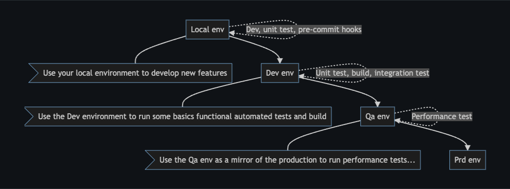
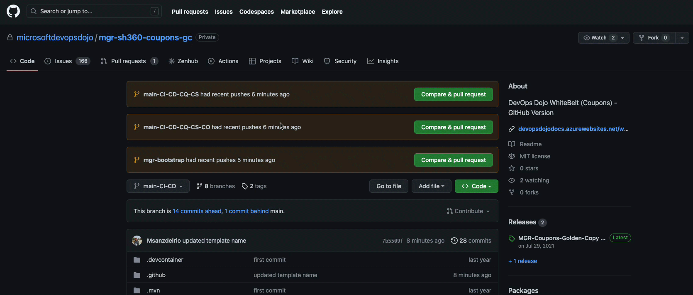
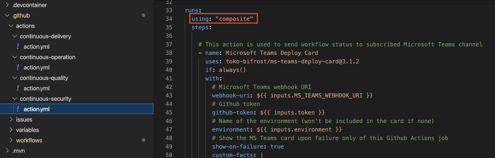
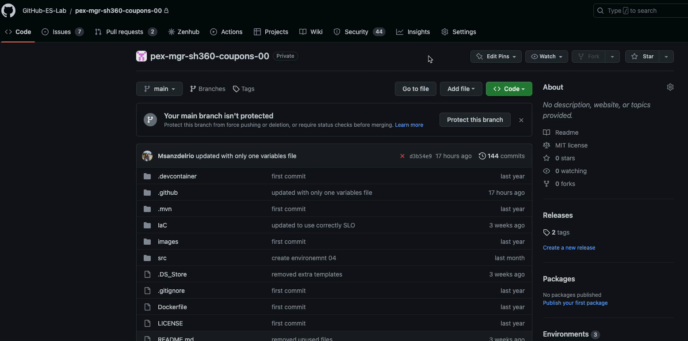
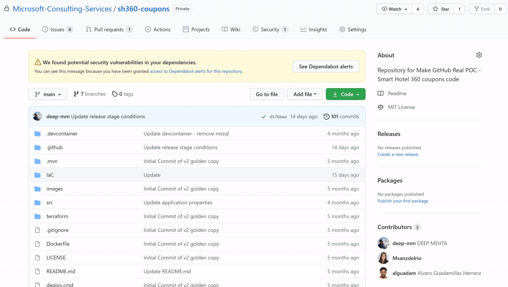
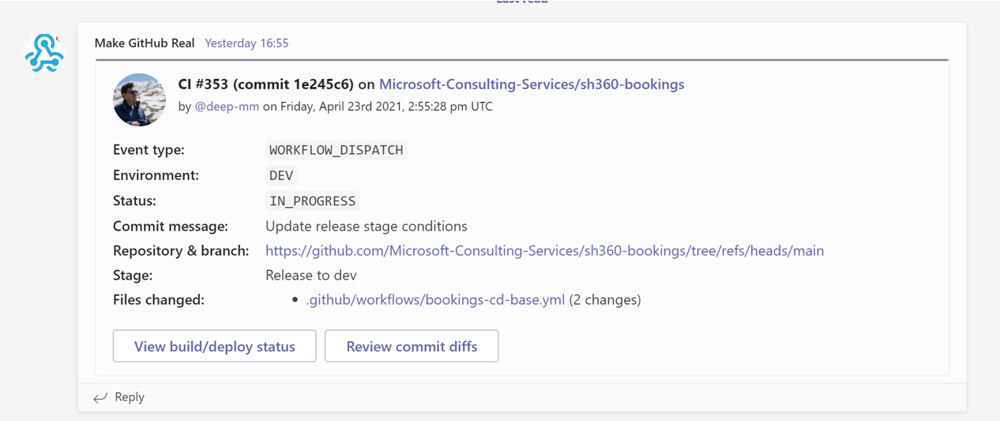
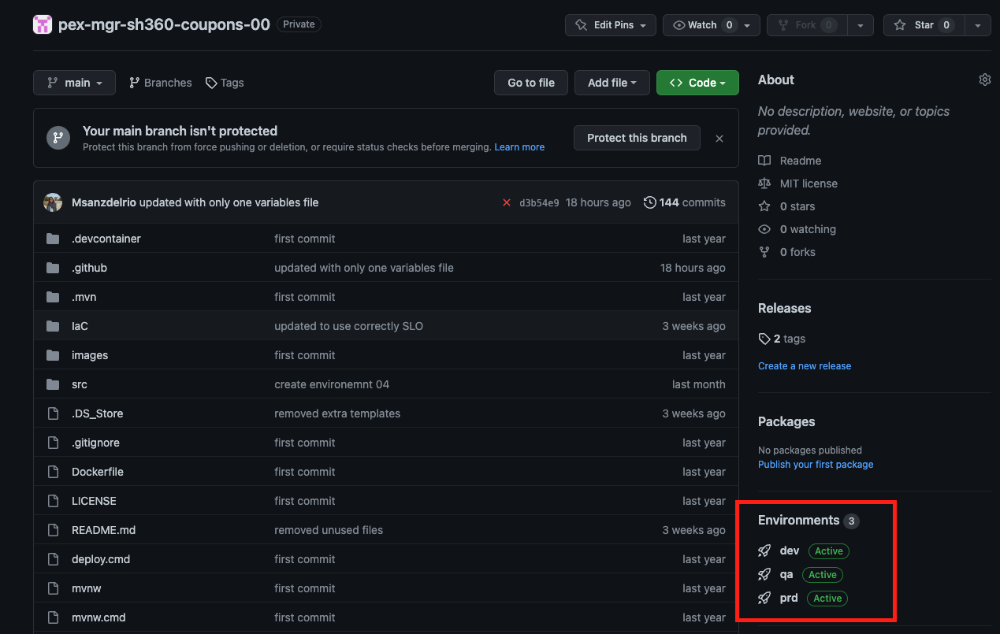
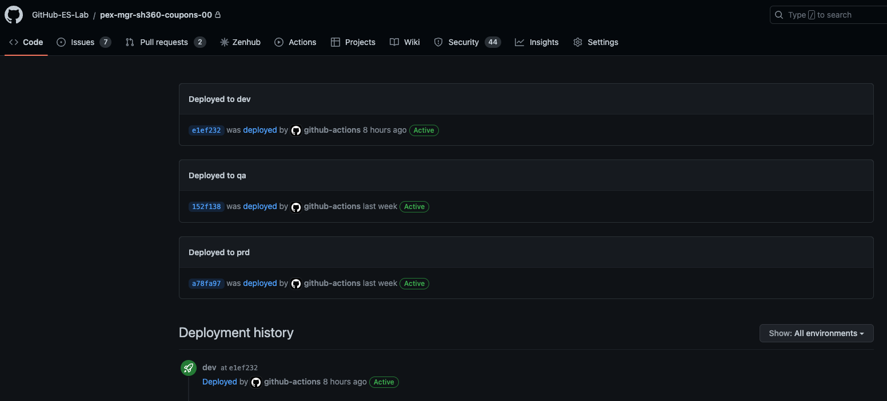

Module 1: Application Deployment
GitHub Actions help you automate your software development workflows from within GitHub. You can deploy workflows in the same place where you store code and collaborate on pull requests and issues.
In GitHub Actions, a workflow is an automated process that you set up in your GitHub repository. You can build, test, package, release, or deploy any project on GitHub with a workflow.
Each workflow is made up of individual actions that run after a specific event (like a pull request) occur. The individual actions are packaged scripts that automate software development tasks.
Exercise 1: Deployment strategy
In this module we will introduce the strategy followed for the Continuous Delivery workflow, to automate the creation of infrastructure and deployment of a new build.
There are three environments that we want to automate the deployment to:
DEV: Developers use DEV stage to do testing/build/experiments for the app.
QA: Developers use QA stage (after DEV stage) to run automated integration tests in this stage/environment. Integration tests are used to immediately alert the team if modifications introduced have an unexpected or negative impact to the existing functionality. Run automated UI tests in this stage/environment to identify the presence of defects in a product/software under test by using Graphical User Interface (GUI).
PRD: Production stage that is generally hand-off to the customer. Any changes deployed to production stage must have pre-approvals set and should be deployed when all other environments are deployed successfully including running all the tests.

Each environment should be deployed in the sequence based on the success of the previous environment. To understand how this is achieved in the Continuous-delivery, we need to checkout the on section. This is the section where triggers for the workflow are configured. Configure the workflow_dispatch to determine the types of trigger. This allows manually trigger the workflow under demand.

Triggers can be configured against specific branches. For this set of labs, we have established a naming convention for our branches based on the users/{user_alias}/{purpose_of_the_branch} schema. This is why, under branches: you can see both, main and users/**.
On the other side, you can also find the workflow_run type of trigger configure. This trigger will ensure that every time the Continuous-integration completed then automatically our Continuous-delivery workflow will run, ensuring a seamless DevOps experience from a deployment perspective.
name: Continuous-Delivery
#Triggers to run the workflow
on:
workflow_run:
workflows: ["Continuous-integration"]
types:
- completed
workflow_dispatch:
branches: [ main, users/** ]
Take some time to understand how continuous-delivery.yml and environment-template.yml workflows interact. Given that many of the steps need to be executed in every environment (deploy infrastructure, deploy application, run security tests, etc) rather than copying and pasting from one workflow to another, we wanted to reuse as much code as possible so the maintenance of it gets simplified. In order to do that we have taken advantage of the reusable workflows. Following this startegy, the continuous-delivery.yml will behave as the caller while the environment-template.yml is the reusable workflow that, based on some conditions, may execute all of the defined steps or not. E.g. integration tests should only be run in the Qa environment.
Finally, in order to have a clear differentiation of how each DevOps capability is applied to the overall lifecycle we will be using composite actions. A composite action allows you to combine multiple workflow steps within one action. they have led to smaller, more readable workflows as each action has a specific purpose. Some of the advanatges include:
- Separate large workflows into multiple files.
- Create componentized actions to be used in multiple workflows - reducing duplication.
- Many steps are condensed into a single one within the Actions view on GitHub, improving the ability to track a workflows progress.
- The descriptive nature of an action.yml file improves the readability of a GitHub workflow when understanding necessary inputs and outputs.

Exercise 2: Workflow changes
To complete this exercise, you will make changes to the Continuous-delivery, which is continuous-delivery.yml. The objective is to enable all actions from the continuous-delivery composite action, to automatically deploy the required infrastructure and source code in the web app.
Go to the repository in Github.
Click on Settings > Environments and select the prd environment. In this blade you can configure different settings like minimum number of approvers, wait timer before deployment, allowed branches to deploy in this environment and environment secrets.
Select the checkbox Required reviewers and add your team's name. Now, before deploying into the production environment, someone from that team will need to approve deployment.

Go back to the repository and open the GitHub Codespaces if you have one already created. If not, go ahead and select
+ New codespace.
Create a new branch following the
users/{user_alias}/{purpose_of_the_branch}schema.Open the .github/workflows/environment-template.yml file.
In the config_variables job you can see how we are configuring some environment variables based on the
.github/variables/variables.jsonfile. These variables are setup as outputs of the job so they can be defined once but consume multiple times in the subsequent jobs.As part of every job we will checkout the repository first and then call the corresponding composite action. In the release job definition you can see how that is done. Lets uncomment the
Deploy to Azure - ${{ inputs.environment }}step and see what it does.Open the
.github/actions/continuous-delivery/action.ymlfile. First thing you can see is how input parameters are defined. Then we have the output section that let us define some output* values that would be passed into the template workflow once the composite action is executed. After that we can see the run section where we specify this is a composite action and then define the steps to be executed.name: "Deploy to Azure" description: "Deploy resources to azure environment" inputs: environment: description: "Environment to deploy resources to" required: true default: "dev" [...] outputs: status: description: "Status" value: ${{ steps.webAppDeploy.outcome }} runs: using: "composite" steps:FIrst thing we do is create a Microsoft Teams card is created with the details of the specific job. This allows the team to continuously collaborate and monitor the status of the deployments without going to the GitHub repository. This is a common approach that will be replicated in every composite action.

Next action downloads the build artifacts generated by the Continuous Integration workflow.
Go to the
Create GitHub deployment for deployment-${{ env.pipeline_env }}action. Deployment statuses allow external services to mark deployments with an error, failure, pending, in_progress, queued, or success state that systems listening to deployment_status events can consume. You can also check the deployments history into the different environments.

As part of the shift-left strategy for quality and security we have implemented a
Bicep linteraction that checks Bicep files for syntax errors and best practice violations. The linter helps enforce coding standards by providing guidance during development.After the checks have passed for the infrastructure, then we deploy the landing zone in Azure using bicep templates.
The
Azure WebAppaction deploys the application onto Azure WebApp. This actions relies on the infrastructure previously deployed in the release job.- name: Azure WebApp id: webAppDeploy uses: Azure/webapps-deploy@v2 with: app-name: "${{ inputs.cus_prefix }}-dojo-coupon-${{ inputs.environment }}-${{ inputs.team_suffix }}" package: "$GITHUB_WORKSPACE/drop/${{ inputs.repoName }}/target"The
Update deployment statustasks will update the status of the deployments in the repository.After having done all the changes. Commit them and create a Pull Request. Refer Raise a PR to see how to raise a new pull request. Link both, the commit and pull request, to the specific task in ADO by using the
AB#{work_item_id}format. As part of the pull request check, the CI and CodeQl workflows will be triggered. Once the pull requests is approved and checks have been passed, you can merge the changes into the main branch.As part of this merge, the Continuous-integration workflow will be triggered again. If successfully executed, then the Continuous-delivery will be triggered afterwards. Monitor the progress of the workflow by checking the Microsoft Teams Card created. Once the app is deployed, you can access the link from the workflow details.

Key takeaways
- Learning GitHub Workflow and Actions.
- Deploy Coupon Application
- Understanding the Azure Resources and Automation.